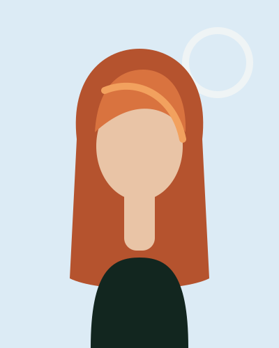

Corte
Cortes a tu medida, pensados para cómo te peinas cada mañana y para que crezcan bien entre cita y cita.
Pedir corte →Peluquería en Benacazón · Sevilla
Cortes, color y peinados con calma, buen oficio y el trato cercano de tu peluquería de barrio. Escríbenos y te buscamos hueco.
Servicios
Tres pilares y un mismo cuidado. Si buscas algo concreto, pregúntanos por WhatsApp y te contamos.
Cortes a tu medida, pensados para cómo te peinas cada mañana y para que crezcan bien entre cita y cita.
Pedir corte →Coloración, retoque de raíz o un cambio de tono. Te asesoramos para que el color te favorezca y dure.
Consultar color →Secados, ondas y peinados para el día a día o para una ocasión especial. Sales con el peinado listo para lo que venga.
Reservar peinado →Peluquería
Nada de prisas ni de cortes en serie. Cada cita sigue el mismo orden para que sepas qué esperar.
Quiero mi citaNos cuentas cómo llevas el pelo, qué te gusta y qué no. Si traes una foto de referencia, mejor.
Te decimos con sinceridad qué va a funcionar con tu tipo de pelo y tu rutina, antes de empezar.
Corte, color o peinado con tiempo y atención al detalle, sin mirar el reloj.
Te explicamos cómo mantenerlo en casa para que te dure el resultado del salón.
Galería



Ilustraciones provisionales. Aquí irán las fotos reales de vuestros trabajos.

Sobre el salón
Fon Peluqueros está en la calle Cabo de Gata, en el local 7. Un sitio cómodo y sin pretensiones donde la gente vuelve porque se siente bien atendida.
Abrimos de lunes a viernes, por la mañana y por la tarde, para que puedas venir antes o después del trabajo. Lo más fácil para pedir hora es escribirnos por WhatsApp.
Opiniones
Texto de ejemploAquí irá una reseña real de Google, copiada tal cual con el permiso del salón.
Texto de ejemploEspacio para una segunda reseña real: lo que más valoran vuestros clientes, con sus palabras.
Pide tu cita
Elige el servicio y la franja que mejor te venga. Se abre WhatsApp con el mensaje preparado; no se envía nada hasta que tú le des.
¿Prefieres llamar? 651 61 17 80Ubicación

Contacto